natural environment
ɑkɑcɑe आकाचाए N सं. poison; ज़हर. SD: natural environment, प्राकृतिक वातावरण.
 ɑle आले VAR: ɑːle आऽले; ɑːlɛ आऽलै. N सं. lightning; बिजली की चमक. ɑlekom आलेकोम. There is lightning. बिजली चमक रही है।. ɑle-berɑ pʰɑʈɑkom आलेबेरा फाटाकोम. It is lightning heavily. बिजली ज़ोर से चमकती है।. SD: natural environment, प्राकृतिक वातावरण.
ɑle आले VAR: ɑːle आऽले; ɑːlɛ आऽलै. N सं. lightning; बिजली की चमक. ɑlekom आलेकोम. There is lightning. बिजली चमक रही है।. ɑle-berɑ pʰɑʈɑkom आलेबेरा फाटाकोम. It is lightning heavily. बिजली ज़ोर से चमकती है।. SD: natural environment, प्राकृतिक वातावरण.
ɑlekuruɖe आलेकूरूडे MORPH: ɑle-kuruɖe. N सं. thunderstorm; आंधी-तूफ़ान. SD: natural environment, प्राकृतिक वातावरण.
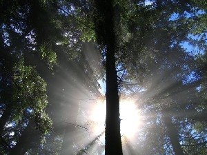 |
ɑmbikʰir2 आम्बीखीर MORPH: ɑm-bikʰir. N सं. sunlight; सूरज की रोशनी. SD: natural environment, प्राकृतिक वातावरण. SEE: ɑmbikʰir1 ‘morning’ ‘सुबह आम्बीखीरhm:{1}’; -ɑmbikʰir3 ‘day; temporal adverb (bound)’ ‘दिन; समयसूचक क्रिया-विशेषण -आम्बीखीरhm:{3}’.
ɑmɛ आमै Etym: Pujjukar; Bo; पुज्जूकर; बो. N सं. earth; पृथ्वी. SD: natural environment, प्राकृतिक वातावरण.
ɑrɑːccɔl आराऽच्चौल MORPH: ɑrɑː-ccɔl. N सं. light (natural); प्रकाश (प्राकृतिक). SD: natural environment, प्राकृतिक वातावरण.
ɑro2 आरो N सं. plain area, inside mangrove; खाड़ी पेड़ों के बीच की समतल जगह. SD: natural environment, प्राकृतिक वातावरण. SEE: ɑro1 ‘forest, scant’ ‘जंगल, कम घना आरोhm:{1}’.
bɑrɖeŋo बारडेङो N सं. a type of marble found near Mayabandar; एक प्रकार का संगमरमरी पत्थर जो मायाबंदर के पास मिलता है. SD: natural environment, प्राकृतिक वातावरण.
beʈoko बेटोको N सं. river; नदी. SD: natural environment, प्राकृतिक वातावरण.
 bɛŋ बैङ VAR: bɛːŋ बैऽङ. N सं. mud; कीचड़. SD: natural environment, प्राकृतिक वातावरण.
bɛŋ बैङ VAR: bɛːŋ बैऽङ. N सं. mud; कीचड़. SD: natural environment, प्राकृतिक वातावरण.
 bilikʰutɑrɑcɑ बीलीखूताराचा MORPH: bilikʰu-tɑrɑ-cɑ. VAR: bilikʰu-rɑ-cɑ बीलीखूराचा. N सं. spider web; मकड़जाल. SD: natural environment, प्राकृतिक वातावरण.
bilikʰutɑrɑcɑ बीलीखूताराचा MORPH: bilikʰu-tɑrɑ-cɑ. VAR: bilikʰu-rɑ-cɑ बीलीखूराचा. N सं. spider web; मकड़जाल. SD: natural environment, प्राकृतिक वातावरण.
bilikʰutɑrɑpʰoŋ बीलीखूताराफोङ MORPH: bilikʰu-tɑrɑ-pʰoŋ. N सं. heaven; sky; स्वर्ग; आकाश. SD: natural environment, प्राकृतिक वातावरण, mythology, पौराणिक.
biliʈe बीलीटे N सं. mist; धुंध. SD: natural environment, प्राकृतिक वातावरण.
bilurɔːwɔ बीलूरौऽवौ MORPH: bilur-ɔːwɔ. N सं. rainbow; इंद्रधनुष. SD: natural environment, प्राकृतिक वातावरण.
bilutɑrɑcum बीलूताराचूम MORPH: bilu-tɑrɑ-cum. N सं. rainbow; इंद्रधनुष. SD: natural environment, प्राकृतिक वातावरण.
bip बीप VAR: biːp बीऽप. N सं. dust; धूल. SD: natural environment, प्राकृतिक वातावरण.
birɑdi बीरादी N सं. shore; समुद्र का किनारा. SD: natural environment, प्राकृतिक वातावरण, marine, समुद्री.
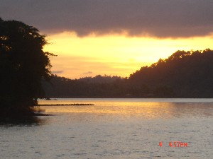 |
birɑle बीराले N सं. sunset; सूर्यास्त. SD: natural environment, प्राकृतिक वातावरण.
 biriu1 बीरीऊ VAR: biriyu बीरीयू; biːriw बीऽरीव. N सं. dirty water; गंदा पानी. SD: natural environment, प्राकृतिक वातावरण. SEE: biriu2 ‘milk’ ‘दूध बीरीऊhm:{2}’.
biriu1 बीरीऊ VAR: biriyu बीरीयू; biːriw बीऽरीव. N सं. dirty water; गंदा पानी. SD: natural environment, प्राकृतिक वातावरण. SEE: biriu2 ‘milk’ ‘दूध बीरीऊhm:{2}’.
 biu2 बीऊ N सं. light; wood-smoke; उजाला; लकड़ी का धुआं. ɑrɑ biu tʰuike आरा बीऊ थूईके. smoke from wood burnt near a grave. क़ब्र के पास जलने वाली लकड़ियों का धुआं. biu-ere bɑte बिऊ एरे बाते. Turn off the light. बत्ती बंद कर दो. SD: natural environment, प्राकृतिक वातावरण, fire, अग्नि. SEE: biu1 ‘incense’ ‘धूप; अगरबत्ती बीऊhm:{1}’.
biu2 बीऊ N सं. light; wood-smoke; उजाला; लकड़ी का धुआं. ɑrɑ biu tʰuike आरा बीऊ थूईके. smoke from wood burnt near a grave. क़ब्र के पास जलने वाली लकड़ियों का धुआं. biu-ere bɑte बिऊ एरे बाते. Turn off the light. बत्ती बंद कर दो. SD: natural environment, प्राकृतिक वातावरण, fire, अग्नि. SEE: biu1 ‘incense’ ‘धूप; अगरबत्ती बीऊhm:{1}’.
boɑ बोआ N सं. land; ज़मीन. boɑ-l ʈʰɑ-ono-b-ɔm बोआल ठाओनोबौम. I am sitting on the ground. मैं ज़मीन पर बैठा हूं।. ʈʰ-icoboɑ ठीचोबोआ. my land. मेरी ज़मीन. SD: natural environment, प्राकृतिक वातावरण.
bodo बोदो Etym: Bea; बेया. N सं. sun; सूर्य. SD: natural environment, प्राकृतिक वातावरण.
borʈɛrcek बोरटैरचेक MORPH: bor-ʈɛr-cek. N सं. wind; storm; हवा; तूफ़ान. SD: natural environment, प्राकृतिक वातावरण.
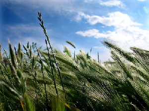 |
bɔr बौर VAR: bɔːr बौऽर. N सं. wind; हवा. SD: natural environment, प्राकृतिक वातावरण.
bɔːrborɑ बौऽरबोरा MORPH: bɔːr-borɑ. N सं. air flow; हवा; बयार. SD: natural environment, प्राकृतिक वातावरण.
bɔtɔ बौतौ N सं. storm; तूफ़ान. SD: natural environment, प्राकृतिक वातावरण.
 buɑ बूआ VAR: boɑ बोआ; bowɑː बोवाऽ. N सं. land; soil; earth; ज़मीन; मिट्टी; पृथ्वी. ɖikʰo nerem boɑ pʰɔŋ be tɛsɑ डीखो नेरेम बोआ फौङ बे तैसा. You (honorific) have now been cremated in the earth. आपका शरीर अब मिट्टी में मिल गया।. SD: natural environment, प्राकृतिक वातावरण.
buɑ बूआ VAR: boɑ बोआ; bowɑː बोवाऽ. N सं. land; soil; earth; ज़मीन; मिट्टी; पृथ्वी. ɖikʰo nerem boɑ pʰɔŋ be tɛsɑ डीखो नेरेम बोआ फौङ बे तैसा. You (honorific) have now been cremated in the earth. आपका शरीर अब मिट्टी में मिल गया।. SD: natural environment, प्राकृतिक वातावरण.
buːiliwlɛːw बूऽईलीवलैऽव N सं. creek, small; छोटी खाड़ी. SD: natural environment, प्राकृतिक वातावरण.
bule बूले N सं. creek, big; बड़ी खाड़ी. SD: natural environment, प्राकृतिक वातावरण.
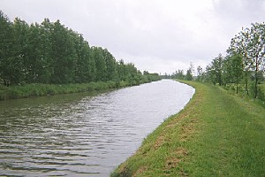 |
 buliu1 बूलीऊ VAR: buːliw बूऽलीव. N सं. canal; नहर. SD: natural environment, प्राकृतिक वातावरण. SEE: buliu2 ‘creek’ ‘खाड़ी बूलीऊhm:{2}’; buliu3 ‘drain’ ‘नाला बूलीऊhm:{3}’.
buliu1 बूलीऊ VAR: buːliw बूऽलीव. N सं. canal; नहर. SD: natural environment, प्राकृतिक वातावरण. SEE: buliu2 ‘creek’ ‘खाड़ी बूलीऊhm:{2}’; buliu3 ‘drain’ ‘नाला बूलीऊhm:{3}’.
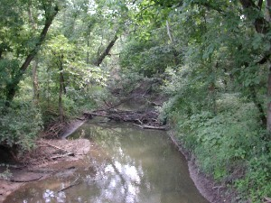 |
 buliu2 बूलीऊ VAR: buːliw बूऽलीव. N सं. creek; खाड़ी. SD: natural environment, प्राकृतिक वातावरण. SEE: buliu1 ‘canal’ ‘नहर बूलीऊhm:{1}’; buliu3 ‘drain’ ‘नाला बूलीऊhm:{3}’.
buliu2 बूलीऊ VAR: buːliw बूऽलीव. N सं. creek; खाड़ी. SD: natural environment, प्राकृतिक वातावरण. SEE: buliu1 ‘canal’ ‘नहर बूलीऊhm:{1}’; buliu3 ‘drain’ ‘नाला बूलीऊhm:{3}’.
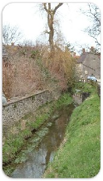 |
 buliu3 बूलीऊ VAR: buːliw बूऽलीव. N सं. drain; नाला. SD: natural environment, प्राकृतिक वातावरण. SEE: buliu1 ‘canal’ ‘नहर बूलीऊhm:{1}’; buliu2 ‘creek’ ‘खाड़ी बूलीऊhm:{2}’.
buliu3 बूलीऊ VAR: buːliw बूऽलीव. N सं. drain; नाला. SD: natural environment, प्राकृतिक वातावरण. SEE: buliu1 ‘canal’ ‘नहर बूलीऊhm:{1}’; buliu2 ‘creek’ ‘खाड़ी बूलीऊhm:{2}’.
buliubot बूलीऊबोत MORPH: buliu-bot. N सं. creek; खाड़ी. SD: natural environment, प्राकृतिक वातावरण.
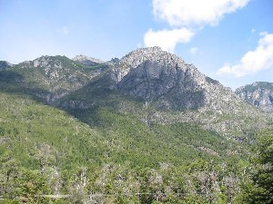 |
 buruin बूरूईन VAR: buruiŋ बूरूईङ; buruiŋ बूरूईङ; buːruɲ बूऽरूञ; burun बूरून. N सं. hill; mountain; पहाड़. buruin-il ʈʰicɔp be बूरूईनील ठीचौप बे. There is a house on the hill. पहाड़ पर एक मकान है।. SD: natural environment, प्राकृतिक वातावरण.
buruin बूरूईन VAR: buruiŋ बूरूईङ; buruiŋ बूरूईङ; buːruɲ बूऽरूञ; burun बूरून. N सं. hill; mountain; पहाड़. buruin-il ʈʰicɔp be बूरूईनील ठीचौप बे. There is a house on the hill. पहाड़ पर एक मकान है।. SD: natural environment, प्राकृतिक वातावरण.
buruinleo बूरूईनलेओ MORPH: buruin-leo. N सं. hillock, small; छोटी पहाड़ी. SD: natural environment, प्राकृतिक वातावरण.
buruintɑrɑle बूरूईन्ताराले MORPH: buruin-tɑrɑle. N सं. slope, of hill; पहाड़ की ढलान. SD: natural environment, प्राकृतिक वातावरण.
buruintokɑrɑ बूरूईन्तोकारा MORPH: buruin-to-kɑrɑ. N सं. steep incline of hill; पहाड़ की खड़ी चढ़ाई. SD: natural environment, प्राकृतिक वातावरण.
buruintompʰoŋ बूरूईनतोम्फोङ MORPH: buruin-tom-pʰoŋ. N सं. foothills; पहाड़ की तलहटी; नीचे का हिस्सा. SD: natural environment, प्राकृतिक वातावरण, space, अन्तरिक्ष.
buruintutɖelo बूरूईनतूतडेलो MORPH: buruin-tut-ɖelo. N सं. hillock; छोटी पहाड़ी; टीला. SD: natural environment, प्राकृतिक वातावरण.
burukʰutɑrɑboʈʰo बूरूखूताराबोठो MORPH: burukʰu-tɑrɑ-boʈʰo. N सं. end, of the rocky region; चट्टानी क्षेत्र की समाप्ति. SD: marine, समुद्री, natural environment, प्राकृतिक वातावरण.
cɑešitomeo चाएशीतोमेओ MORPH: cɑe-šito-meo. N सं. a kind of stone used for sharpening, a whetstone; एक प्रकार का धार बनाने वाला पत्थर. SD: natural environment, प्राकृतिक वातावरण.
cɑːrɛtɑcɑːy चाऽरैताचाय MORPH: cɑːrɛ-tɑcɑːy. N सं. low tide; भाटा. SD: natural environment, प्राकृतिक वातावरण.
cɑːrɛtotfeʈɔ चाऽरैतोतफेटौ N सं. high tide; ज्वार. SD: natural environment, प्राकृतिक वातावरण.
cɑrʈɔŋ2 चारटौङ MORPH: cɑr-ʈɔŋ. DEIXIS डीक्सीस. sides of a creek; खाड़ी के किनारे. SD: natural environment, प्राकृतिक वातावरण. SEE: cɑrʈɔŋ1 ‘mangrove’ ‘खाड़ी पेड़ चारटौङhm:{1}’.
cel चेल VAR: cɛːl चैऽल. N सं. waterfall; झरना; जलप्रपात. SD: natural environment, प्राकृतिक वातावरण.
cɛloe चैलोए N सं. smell of sea shells; सीपी और शंख की गंध. SD: attribute, विशेषता, natural environment, प्राकृतिक वातावरण.
cokbimulupʰoŋ चोकबीमूलूफोङ MORPH: cokbi-mulu-pʰoŋ. N सं. turtle hole in the sand; हरे कछुए की रेत में बनी मांद. SD: natural environment, प्राकृतिक वातावरण.
cor चोर N सं. current; प्रवाह. SD: natural environment, प्राकृतिक वातावरण.
coʈlo चोट्लो VAR: coʈo चोटो. N सं. a big star; एक बड़ा तारा. SD: natural environment, प्राकृतिक वातावरण. NT: Venus, appears between 3 a.m. and 4 a.m. शुक्र तारा। यह सुबह तीन से चार के बीच निकलता है।.
cɔfo चौफो N सं. sea weed of grassy type; समुद्री घास. SD: natural environment, प्राकृतिक वातावरण.
cɔʈlo चौटलो N सं. Pole star; ध्रुव तारा. SD: natural environment, प्राकृतिक वातावरण.
cɔwboŋ चौवबोङ N सं. bush; झाड़ी. SD: natural environment, प्राकृतिक वातावरण.
doroɡil दोरोगील N सं. reef; समुद्री चट्टान. SD: natural environment, प्राकृतिक वातावरण.
ɖes डेस ADJ वि. hazy; धुंधला. SD: natural environment, प्राकृतिक वातावरण.
ɖiɖek1 डीडेक VAR: ɖiɖiek डीडीएक. N सं. morning; sunrise; सुबह; सूर्योदय. SD: time, समय, natural environment, प्राकृतिक वातावरण. SEE: ɖiɖek2 ‘now; today’ ‘अभी; आज डीडेकhm:{2}’; ɖiɖek3 ‘yesterday’ ‘कल (बीता हुआ) डीडेकhm:{3}’.
ɖiʈek डीटेक N सं. midday sun; afternoon; दोपहर. SD: natural environment, प्राकृतिक वातावरण.
 ɖiu1 डीऊ Etym: Jeru; जेरू. VAR: ɖiyuw डीयूव. ADJ वि. hot; sunny; गर्मी; उजला. ʈʰut ɖiu birɑle kɔm ठूत डीऊ बीराले कौम. It will take the whole day. इसमें पूरा दिन लग जाएगा।. SD: natural environment, प्राकृतिक वातावरण. SEE: ɖiu2 ‘sun’ ‘सूरज डीऊhm:{2}’; ɖiu3 ‘sunlight’ ‘धूप डीऊhm:{3}’.
ɖiu1 डीऊ Etym: Jeru; जेरू. VAR: ɖiyuw डीयूव. ADJ वि. hot; sunny; गर्मी; उजला. ʈʰut ɖiu birɑle kɔm ठूत डीऊ बीराले कौम. It will take the whole day. इसमें पूरा दिन लग जाएगा।. SD: natural environment, प्राकृतिक वातावरण. SEE: ɖiu2 ‘sun’ ‘सूरज डीऊhm:{2}’; ɖiu3 ‘sunlight’ ‘धूप डीऊhm:{3}’.
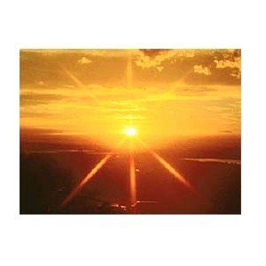 |
 ɖiu2 डीऊ Etym: Jeru; जेरू. VAR: ɖiyuw डीयूव. N सं. sun; सूरज. SD: natural environment, प्राकृतिक वातावरण. SEE: ɖiu1 ‘hot; sunny’ ‘गर्मी; उजला डीऊhm:{1}’; ɖiu3 ‘sunlight’ ‘धूप डीऊhm:{3}’.
ɖiu2 डीऊ Etym: Jeru; जेरू. VAR: ɖiyuw डीयूव. N सं. sun; सूरज. SD: natural environment, प्राकृतिक वातावरण. SEE: ɖiu1 ‘hot; sunny’ ‘गर्मी; उजला डीऊhm:{1}’; ɖiu3 ‘sunlight’ ‘धूप डीऊhm:{3}’.
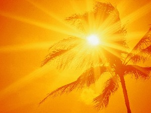 |
 ɖiu3 डीऊ Etym: Jeru; जेरू. VAR: ɖiyuw डीयूव. N सं. sunlight; धूप. SD: natural environment, प्राकृतिक वातावरण. SEE: ɖiu1 ‘hot; sunny’ ‘गर्मी; उजला डीऊhm:{1}’; ɖiu2 ‘sun’ ‘सूरज डीऊhm:{2}’.
ɖiu3 डीऊ Etym: Jeru; जेरू. VAR: ɖiyuw डीयूव. N सं. sunlight; धूप. SD: natural environment, प्राकृतिक वातावरण. SEE: ɖiu1 ‘hot; sunny’ ‘गर्मी; उजला डीऊhm:{1}’; ɖiu2 ‘sun’ ‘सूरज डीऊhm:{2}’.
ɖiubetoncɔlɔ डीऊबेतोन्चौलौ MORPH: ɖiu-beton-cɔlɔ. N सं. solar eclipse; सूर्यग्रहण. SD: natural environment, प्राकृतिक वातावरण.
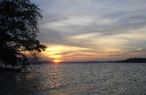 |
 ɖiukɑrɑ डीऊकारा MORPH: ɖiu-kɑrɑ. N सं. direction of sunrise, east; सूर्योदय की दिशा, पूर्व दिशा. ɖiu kɑrɑ kɔm डीऊ एकारा कौम. The sun rises in the east. सूरज पूर्व से उगता है।. SD: natural environment, प्राकृतिक वातावरण.
ɖiukɑrɑ डीऊकारा MORPH: ɖiu-kɑrɑ. N सं. direction of sunrise, east; सूर्योदय की दिशा, पूर्व दिशा. ɖiu kɑrɑ kɔm डीऊ एकारा कौम. The sun rises in the east. सूरज पूर्व से उगता है।. SD: natural environment, प्राकृतिक वातावरण.
 |
ɖiukɔrɑle डीऊकौराले MORPH: ɖiu-kɔrɑle. N सं. sunset; सूर्यास्त. ɖiu-kɔrɑle-kɔm डीऊकौरालेकौम. The sun is setting. सूरज डूब रहा है।. SD: space, अन्तरिक्ष, natural environment, प्राकृतिक वातावरण.
ɖiutɑrɑcɔl डीऊताराचौल Etym: Jeru; जेरू. N सं. sunlight; धूप. SD: natural environment, प्राकृतिक वातावरण.
 ɖiutɑrɑle1 डीऊताराले MORPH: ɖiu-tɑrɑ-le. N सं. sundown; setting sun; सूर्यास्त; डूबता सूरज. SD: natural environment, प्राकृतिक वातावरण. SEE: ɖiutɑrɑle2 ‘west’ ‘पश्चिम डीऊतारालेhm:{2}’.
ɖiutɑrɑle1 डीऊताराले MORPH: ɖiu-tɑrɑ-le. N सं. sundown; setting sun; सूर्यास्त; डूबता सूरज. SD: natural environment, प्राकृतिक वातावरण. SEE: ɖiutɑrɑle2 ‘west’ ‘पश्चिम डीऊतारालेhm:{2}’.
ɖiutɑrɑʈɛt2 डीऊताराटैत MORPH: ɖiu-tɑrɑ-ʈɛt. Etym: Khora; खोरा. N सं. sun; sunlight; सूर्य; धूप. SD: natural environment, प्राकृतिक वातावरण. SEE: ɖiutɑrɑʈɛt1 ‘fish’ ‘मछली डीऊताराटैतhm:{1}’.
ɖiuterbec डीऊतेरबेच MORPH: ɖiu-ter-bec. N सं. hiding of the sun behind clouds; बदली में छुपा सूरज. SD: natural environment, प्राकृतिक वातावरण.
ɖiutercek डीऊतेरचेक MORPH: ɖiu-tercek. VAR: ɖiutɛrcek डीऊतैरचेक. MORPH: ɖiu-tɛrcek. VAR: ɖiutɛrcɛkʰ डीऊतैरचैख. N सं. hot; scorching sunshine; piercing sunlight; गर्मी; तमतमाती धूप; चौंधियाने वाली धूप. SD: natural environment, प्राकृतिक वातावरण.
ɖiutɛrcɔkʰo डीऊतैरचौखो MORPH: ɖiu-tɛr-cɔkʰo. N सं. strong sun; तेज़ धूप. SD: natural environment, प्राकृतिक वातावरण.
ɖiyuwfitʰil डीयूवफीथील MORPH: ɖiyuw-fitʰil. N सं. sun rays; सूर्य की किरणें. SD: natural environment, प्राकृतिक वातावरण.
ɖuːlofɔrɔ डूऽलोफौरौ MORPH: ɖuːlo-fɔrɔ. N सं. moon, full; पूर्णिमा. SD: natural environment, प्राकृतिक वातावरण.
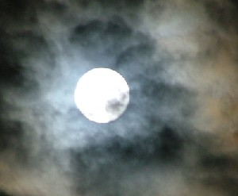 |
 ɖulopʰidil डूलोफीदील MORPH: ɖulo-pʰidil. VAR: ɖulɔ-ɸidil डूलौफीदील. N सं. moonlight; full moon; चांदनी; पूर्णिमा. SD: natural environment, प्राकृतिक वातावरण.
ɖulopʰidil डूलोफीदील MORPH: ɖulo-pʰidil. VAR: ɖulɔ-ɸidil डूलौफीदील. N सं. moonlight; full moon; चांदनी; पूर्णिमा. SD: natural environment, प्राकृतिक वातावरण.
ɖulopʰɔrɔk डूलोफौरौक MORPH: ɖulo-pʰɔrɔk. N सं. big moon; बड़ा चांद. SD: natural environment, प्राकृतिक वातावरण.
ɖuːlotɑrɑːwto डूऽलोताराऽवतो MORPH: ɖuːlo-tɑrɑːwto. N सं. third quarter-moon; तीज का चांद. SD: natural environment, प्राकृतिक वातावरण.
ɖulotɛrkʰuro डूलोतैरखूरो MORPH: ɖulo-tɛr-kʰuro. N सं. full moon; पूरा चांद, पूर्णिमा. SD: natural environment, प्राकृतिक वातावरण.
 ɖulɔ डूलौ VAR: ɖulo डूलो. N सं. moonlight; moon; month; चांदनी रात; चांद; महीना. ɖulo tɑrɑ otɔ डूलो तारा ओतौ. Dawn is approaching. सुबह होने वाली है।. SD: natural environment, प्राकृतिक वातावरण.
ɖulɔ डूलौ VAR: ɖulo डूलो. N सं. moonlight; moon; month; चांदनी रात; चांद; महीना. ɖulo tɑrɑ otɔ डूलो तारा ओतौ. Dawn is approaching. सुबह होने वाली है।. SD: natural environment, प्राकृतिक वातावरण.
ɖulɔbetoncɔlo डूलौबेतोन्चौलो MORPH: ɖulɔ-beton-cɔlo. N सं. lunar eclipse; चंद्रग्रहण. SD: natural environment, प्राकृतिक वातावरण.
ɖulɔtɑrɑcɔl डूलौताराचौल MORPH: ɖulɔ-tɑrɑ-cɔl. N सं. light of the moon; चांदनी. SD: natural environment, प्राकृतिक वातावरण.
epʰile एफीले MORPH: e-pʰile. N सं. tide; ज्वार. SD: natural environment, प्राकृतिक वातावरण, marine, समुद्री.
etcɔleɔ एतचौलेऔ N सं. small wave; छोटी लहर. SD: natural environment, प्राकृतिक वातावरण, marine, समुद्री.
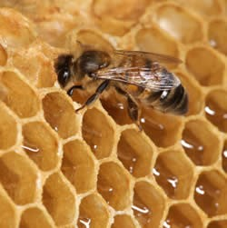 |
 eʈo एटो N सं. wax, of the hive; मधुमक्खी के छत्ते का मोम. SD: natural environment, प्राकृतिक वातावरण.
eʈo एटो N सं. wax, of the hive; मधुमक्खी के छत्ते का मोम. SD: natural environment, प्राकृतिक वातावरण.
fɑl2 फाल N सं. wave; लहर. SD: natural environment, प्राकृतिक वातावरण, marine, समुद्री. SEE: fɑl1 ‘leaf’ ‘पत्ता फालhm:{1}’.
fɑlɖuo फालडूओ N सं. wave, big; बड़ी लहर. SD: natural environment, प्राकृतिक वातावरण, marine, समुद्री.
fɑlekkɔreːbɔ फालेककौरेऽबौ MORPH: fɑl-ekkɔ-reːbɔ. N सं. wave, small; छोटी लहर. SD: natural environment, प्राकृतिक वातावरण, marine, समुद्री.
fɑlerkɔlɛ फालएरकौलै MORPH: fɑl-er-kɔlɛ. N सं. wave, big; बड़ी लहर. SD: natural environment, प्राकृतिक वातावरण, marine, समुद्री.
hɑmɛ हामै Etym: Pujjukar. N सं. earth; धरती. SD: natural environment, प्राकृतिक वातावरण.
icoʈɔrɔ ईचोटौरौ MORPH: ico-ʈɔrɔ. N सं. coast; तट. ʈʰ-ico-ʈɔrɔ ठीचोटौरौ. my coast. मेरा तट. SD: natural environment, प्राकृतिक वातावरण.
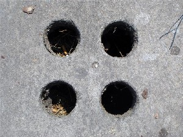 |
iɖiʈ ईडीत N सं. hole; छेद; सुराख. SD: natural environment, प्राकृतिक वातावरण.
iːm ईऽम N सं. soft stone; चिकना पत्थर जो सागर के किनारे पाया जाता है. SD: natural environment, प्राकृतिक वातावरण.
imutɛr ईमूतैर MORPH: imu-tɛr. N सं. goods/ things; वस्तुएं/ चीज़. SD: natural environment, प्राकृतिक वातावरण.
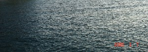 |
 ino2 ईनो N सं. water; पानी. ɑ-tʰire-nu rɛfi-bi ijul nu ino julu kʰulo आथीरे नू रैफीबी ईजूल नू ईनो जूलू खूलो. The children ate rice and drank water. बच्चों ने चावल खाए और पानी पिया।. SD: natural environment, प्राकृतिक वातावरण. SEE: one ‘oil; juice’ ‘तेल; रस ओने ’; ino1 ‘tears’ ‘आंसू ईनोhm:{1}’.
ino2 ईनो N सं. water; पानी. ɑ-tʰire-nu rɛfi-bi ijul nu ino julu kʰulo आथीरे नू रैफीबी ईजूल नू ईनो जूलू खूलो. The children ate rice and drank water. बच्चों ने चावल खाए और पानी पिया।. SD: natural environment, प्राकृतिक वातावरण. SEE: one ‘oil; juice’ ‘तेल; रस ओने ’; ino1 ‘tears’ ‘आंसू ईनोhm:{1}’.
inojulu ईनोजूलू MORPH: ino-julu. N सं. cold water; ठंडा पानी. SD: natural environment, प्राकृतिक वातावरण.
 inotɑrɑcɔr ईनोताराचौर MORPH: ino-tɑrɑ-cɔr. N सं. water resource; flowing water as in rivulet; पानी का स्रोत; बहता पानी जैसे कि नाले में. SD: natural environment, प्राकृतिक वातावरण.
inotɑrɑcɔr ईनोताराचौर MORPH: ino-tɑrɑ-cɔr. N सं. water resource; flowing water as in rivulet; पानी का स्रोत; बहता पानी जैसे कि नाले में. SD: natural environment, प्राकृतिक वातावरण.
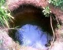 |
 inotɛrpʰɔŋ ईनोतैरफौङ MORPH: ino-tɛr-pʰɔŋ. N सं. well; freshwater hole; कुआं; ताज़े पानी का गड्ढा. SD: natural environment, प्राकृतिक वातावरण.
inotɛrpʰɔŋ ईनोतैरफौङ MORPH: ino-tɛr-pʰɔŋ. N सं. well; freshwater hole; कुआं; ताज़े पानी का गड्ढा. SD: natural environment, प्राकृतिक वातावरण.
iːople1 ईऽओपले ADJ वि. full of light; प्रकाशमय. SD: natural environment, प्राकृतिक वातावरण. SEE: iːople2 ‘light’ ‘प्रकाश ईऽओपलेhm:{2}’.
iːople2 ईऽओपले N सं. light (as in daylight); प्रकाश. SD: natural environment, प्राकृतिक वातावरण. SEE: iːople1 ‘full of light’ ‘प्रकाशमय ईऽओपलेhm:{1}’.
iːr ईऽर N सं. wave; लहर. SD: natural environment, प्राकृतिक वातावरण, marine, समुद्री.
iserep ईसेरेप MORPH: i-serep. N सं. shade; छांव. SD: natural environment, प्राकृतिक वातावरण.
iximil ईखीमील N सं. hot water; गर्म पानी. SD: natural environment, प्राकृतिक वातावरण.
iyoːwme ईयोऽवमे N सं. shower; बरसना. SD: natural environment, प्राकृतिक वातावरण.
jelojeɔ जेलोजेऔ MORPH: jelo-jeɔ. N सं. evening tide; शाम का ज्वारभाटा. SD: natural environment, प्राकृतिक वातावरण, time, समय.
ji जी N सं. rainwater; बारिश का पानी. SD: natural environment, प्राकृतिक वातावरण.
jicererɑliu जीचेरेरालीऊ MORPH: jicerer-ɑliu. N सं. end of rain; बारिश की समाप्ति. SD: natural environment, प्राकृतिक वातावरण.
 jicerikomuʈʰuŋ जीचेरीकोमूठूङ Etym: Bo; बो. VAR: jicer-tumuʈʰuŋ जीचेरतूमूठूङ. N सं. heavy rain; मूसलाधार वर्षा. SD: natural environment, प्राकृतिक वातावरण.
jicerikomuʈʰuŋ जीचेरीकोमूठूङ Etym: Bo; बो. VAR: jicer-tumuʈʰuŋ जीचेरतूमूठूङ. N सं. heavy rain; मूसलाधार वर्षा. SD: natural environment, प्राकृतिक वातावरण.
jicerjine जीचेरजीने MORPH: jicer-jine. N सं. light rain; हल्की बारिश. SD: natural environment, प्राकृतिक वातावरण.
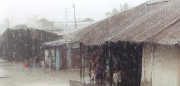 |
 jicɛr जीचैर VAR: jicer जीचेर. N सं. rain; बारिश. jicɛr be cɛr-pʰo जीचैर बे चैर फो. It will not rain here. यहाँ पर बारिश नहीं होगी।. SD: natural environment, प्राकृतिक वातावरण.
jicɛr जीचैर VAR: jicer जीचेर. N सं. rain; बारिश. jicɛr be cɛr-pʰo जीचैर बे चैर फो. It will not rain here. यहाँ पर बारिश नहीं होगी।. SD: natural environment, प्राकृतिक वातावरण.
jiliɔrɔ जीलीऔरौ N सं. bright sunshine indicating the end of the rainy season; चमकती धूप जो वर्षा ऋतु की समाप्ति को दर्शाती है. SD: natural environment, प्राकृतिक वातावरण.
jilliɔrɔ2 जील्लीऔरौ MORPH: jilli-ɔrɔ. N सं. onset of summer; गर्मियों की शुरुआत. SD: natural environment, प्राकृतिक वातावरण, season, मौसम. SEE: jilliɔrɔ1 ‘flower’ ‘फूल जील्लीऔरौhm:{1}’.
jine जीने VAR: jinɛ जीनै. N सं. drizzle; बूंदाबांदी. SD: natural environment, प्राकृतिक वातावरण.
kɑcɑwɑ काचावा Etym: Pujjukar; पुज्जूकर. N सं. broken stones; island; ठीकरे; द्वीप. SD: natural environment, प्राकृतिक वातावरण.
kɑrɑ कारा N सं. origin; आरंभ. ɖiu-kɑrɑ डीऊकारा. sunrise. सूर्योदय. SD: natural environment, प्राकृतिक वातावरण.
kɑrɑŋik काराङीक N सं. seawater; seashore; समुद्र का पानी; समुद्र का किनारा. SD: natural environment, प्राकृतिक वातावरण.
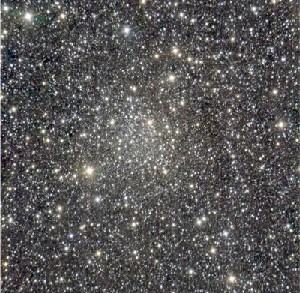 |
 kɑʈɑɲ काटाञ N सं. stars; तारा. SD: natural environment, प्राकृतिक वातावरण.
kɑʈɑɲ काटाञ N सं. stars; तारा. SD: natural environment, प्राकृतिक वातावरण.
kelɛtmo2 केलैत्मो VAR: kelɛʈmo केलैटमो. N सं. soil; मिट्टी. SD: natural environment, प्राकृतिक वातावरण. SEE: kelɛtmo1 ‘fresh wheat flour’ ‘ताजा आटा केलैत्मोhm:{1}’.
keliu केलीऊ VAR: keːliw केऽलीव. N सं. whirlpool; भंवर. SD: natural environment, प्राकृतिक वातावरण.
keːp केऽप N सं. summit; मीनार; शिखर. SD: natural environment, प्राकृतिक वातावरण.
kerɑ1 केरा VAR: kerɑː केराऽ. N सं. bay, of shallow water; छिछले जल की खाड़ी. SD: natural environment, प्राकृतिक वातावरण. SEE: kerɑ2 ‘waist high water’ ‘कमर तक पानी केराhm:{2}’.
kerɑ2 केरा N सं. waist high water; कमर तक पानी. SD: natural environment, प्राकृतिक वातावरण. SEE: kerɑ1 ‘bay, of shallow water’ ‘छिछले जल की खाड़ी केराhm:{1}’.
kɛp कैप Etym: Bo; बो. N सं. evergreen waterhole; पानी/कुआं का सदाबहार गड्ढा. SD: natural environment, प्राकृतिक वातावरण.
koɛr कोऐर N सं. stone; पत्थर. SD: natural environment, प्राकृतिक वातावरण.
kʰole1 खोले N सं. foam; झाग. SD: natural environment, प्राकृतिक वातावरण. SEE: kʰole2 ‘laugh’ ‘हंसना खोलेhm:{2}’.
korobo कोरोबो N सं. dry place; सूखी जगह. SD: natural environment, प्राकृतिक वातावरण. SEE: ʈʰitotkɔrɔbo ‘dried soil or land’ ‘सूखी मिट्टी या ज़मीन ठीतोतकौरौबो ’.
kɔɲorɑ कौञोरा VAR: kɔɲɔrɑ कौञौरा. N सं. waves, small, in a calm sea; शांत समुद्र की छोटी लहरें. SD: natural environment, प्राकृतिक वातावरण.
kɔrɔiɲbikɑrɑ कौरौईञ्बीकारा MORPH: kɔrɔiɲ-bi-kɑrɑ. N सं. feeding ground, of the dugong; डूगोंग के चरने की जगह. SD: natural environment, प्राकृतिक वातावरण.
kɔt3 कौत VAR: kɔʈ कौट. N सं. a kind of very fine clay used for making an idol; deity made of clay (female form); एक प्रकार की महीन मिट्टी जिससे मूर्ति बनाई जाती है; मिट्टी की बनी हुई देवी की मूर्ति. SD: natural environment, प्राकृतिक वातावरण, supernatural, अलौकिक. NT: A mythological figure, mother of all the Great Andamanese. मिथक देवी, अण्डमानियों की जननी।. SEE: kɔt1 ‘cough’ ‘खांसना कौतhm:{1}’; kɔt2 ‘roof’ ‘छत कौतhm:{2}’; kɔt4 ‘tree’ ‘पेड़ कौतhm:{4}’.
kɔʈbikʰibir कौटबीखीबीर MORPH: kɔʈ-bi-kʰibir. N सं. sweet smell of the earth; मिट्टी की सोंधी सुगंध. SD: natural environment, प्राकृतिक वातावरण.
 kuruɖe कूरूडे VAR: koruɖe कोरूडे. N सं. thunder/ thundering; गरजन. ʈɑo kuruɖe टाओ कूरूडे. The clouds are thundering. बादल गरज रहे हैं।. SD: natural environment, प्राकृतिक वातावरण.
kuruɖe कूरूडे VAR: koruɖe कोरूडे. N सं. thunder/ thundering; गरजन. ʈɑo kuruɖe टाओ कूरूडे. The clouds are thundering. बादल गरज रहे हैं।. SD: natural environment, प्राकृतिक वातावरण.
lɑecɛ लाएचै MORPH: lɑe-cɛ. N सं. a kind of cane splinter; एक प्रकार की बेंत की फांस. SD: natural environment, प्राकृतिक वातावरण.
 leišɑr1 लेईशार VAR: lešɑr लेशार; lɛsɑr लैसार. N सं. full dark moon; darkness/ dark night; अमावस; अंधेरा/ अंधेरी रात. SD: natural environment, प्राकृतिक वातावरण. NT: In the Andamans, this time is also known as turtle-hunting time. अण्डमान में अमावस को ‘कछुआ शिकार’ का समय माना जाता है।. SEE: leišɑr2 ‘hunting time’ ‘शिकार का समय लेईशारhm:{2}’.
leišɑr1 लेईशार VAR: lešɑr लेशार; lɛsɑr लैसार. N सं. full dark moon; darkness/ dark night; अमावस; अंधेरा/ अंधेरी रात. SD: natural environment, प्राकृतिक वातावरण. NT: In the Andamans, this time is also known as turtle-hunting time. अण्डमान में अमावस को ‘कछुआ शिकार’ का समय माना जाता है।. SEE: leišɑr2 ‘hunting time’ ‘शिकार का समय लेईशारhm:{2}’.
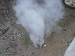 |
 lep लेप VAR: leːp लेऽप; lɔɸ लौफ; wɛɸ वैफ. N सं. smoke; धुआं. SD: natural environment, प्राकृतिक वातावरण.
lep लेप VAR: leːp लेऽप; lɔɸ लौफ; wɛɸ वैफ. N सं. smoke; धुआं. SD: natural environment, प्राकृतिक वातावरण.
lim लीम N सं. a kind of sea stone; एक प्रकार का समुद्री पत्थर. SD: natural environment, प्राकृतिक वातावरण.
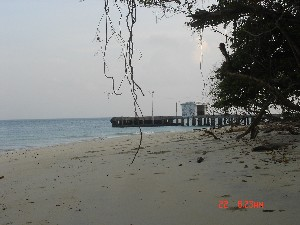 |
luk लूक Etym: Pujjukar; पुज्जूकर. N सं. bank; jetty; किनारा; घाट. SD: natural environment, प्राकृतिक वातावरण.
lukʰui लूखूई N सं. the deep sea; गहरा सागर. SD: natural environment, प्राकृतिक वातावरण.
lurufe लूरूफे VAR: luruphi लूरूफी. N सं. air bubble; हवा का बुलबुला. SD: natural environment, प्राकृतिक वातावरण.
 |
 meo1 मेओ Etym: Jeru; जेरू. VAR: myo म्यो; miɔ मीऔ; meːo मेऽओ; mɛyo मैयो; meyo मेयो. N सं. rock; चट्टान. SD: natural environment, प्राकृतिक वातावरण. SEE: meo2 ‘stone’ ‘पत्थर मेओhm:{2}’.
meo1 मेओ Etym: Jeru; जेरू. VAR: myo म्यो; miɔ मीऔ; meːo मेऽओ; mɛyo मैयो; meyo मेयो. N सं. rock; चट्टान. SD: natural environment, प्राकृतिक वातावरण. SEE: meo2 ‘stone’ ‘पत्थर मेओhm:{2}’.
 |
 meo2 मेओ Etym: Jeru; जेरू. VAR: myo म्यो; miɔ मीऔ; meːo मेऽओ; mɛyo मैयो; meyo मेयो. N सं. stone; पत्थर. SD: natural environment, प्राकृतिक वातावरण. SEE: meo1 ‘rock’ ‘चट्टान मेओhm:{1}’.
meo2 मेओ Etym: Jeru; जेरू. VAR: myo म्यो; miɔ मीऔ; meːo मेऽओ; mɛyo मैयो; meyo मेयो. N सं. stone; पत्थर. SD: natural environment, प्राकृतिक वातावरण. SEE: meo1 ‘rock’ ‘चट्टान मेओhm:{1}’.
meːodirim मेऽओदीरीम MORPH: meːo-dirim. N सं. black rock or stone; काली चट्टान या पत्थर. SD: natural environment, प्राकृतिक वातावरण.
 |
 meopʰoŋ मेओफोङ MORPH: meo-pʰoŋ. VAR: miofoŋ मिओफोङ. N सं. cave of stone; पत्थर की गुफा. kɔrɔiɲ sɑre tɑrɑ-tɑl meo-pʰoŋ ʈʰibikŋo k-ɔm कौरौईञ सारे ताराताल मेओफोङ ठीबीक्ङो कौम. The dugong lives in the stone caves of the sea. डूगोंग समुद्र की पत्थर की गुफा में रहता है।. SD: natural environment, प्राकृतिक वातावरण.
meopʰoŋ मेओफोङ MORPH: meo-pʰoŋ. VAR: miofoŋ मिओफोङ. N सं. cave of stone; पत्थर की गुफा. kɔrɔiɲ sɑre tɑrɑ-tɑl meo-pʰoŋ ʈʰibikŋo k-ɔm कौरौईञ सारे ताराताल मेओफोङ ठीबीक्ङो कौम. The dugong lives in the stone caves of the sea. डूगोंग समुद्र की पत्थर की गुफा में रहता है।. SD: natural environment, प्राकृतिक वातावरण.
 meorebocɔ मेओरेबोचौ MORPH: meo-re-bocɔ. VAR: meɔ-re-bɔcɔ मेऔरेबौचौ. N सं. pebbles; small stones; कंकड़; छोटा पत्थर. SD: natural environment, प्राकृतिक वातावरण.
meorebocɔ मेओरेबोचौ MORPH: meo-re-bocɔ. VAR: meɔ-re-bɔcɔ मेऔरेबौचौ. N सं. pebbles; small stones; कंकड़; छोटा पत्थर. SD: natural environment, प्राकृतिक वातावरण.
 meyototcok मेयोतोतचोक MORPH: meyo-totcok. VAR: miyo-totcuː मीयोतोतचूऽ. N सं. stone, big; बड़ा पत्थर. SD: natural environment, प्राकृतिक वातावरण.
meyototcok मेयोतोतचोक MORPH: meyo-totcok. VAR: miyo-totcuː मीयोतोतचूऽ. N सं. stone, big; बड़ा पत्थर. SD: natural environment, प्राकृतिक वातावरण.
mɔrɔi2 मौरौई N सं. water current; पानी की धारा. SD: natural environment, प्राकृतिक वातावरण. SEE: mɔrɔi1 ‘sea urchin’ ‘जलसाही मौरौईhm:{2}’.
muku मूकू N सं. points of the island; द्वीप के सिरे. SD: natural environment, प्राकृतिक वातावरण.
mur मूर VAR: muːr मूऽर. N सं. foam; झाग. SD: natural environment, प्राकृतिक वातावरण.
notɑmo नोतामो N सं. marshes; दलदल. SD: natural environment, प्राकृतिक वातावरण.
nu2 नू N सं. retreating waves; हल्फ़ा की लौटती लहर. SD: natural environment, प्राकृतिक वातावरण, marine, समुद्री. NT: Name of a woman. अण्डमानी लड़की का नाम।. SEE: nu1 ‘other man’ ‘दूसरा आदमी नूhm:{1}’; nu3 ‘weave net’ ‘जाल बुनना नूhm:{3}’.
 ŋeʈeŋ ङेटेङ VAR: ŋeʈem ङेटेम; ɲɑʈɛŋ ञाटैङ. N सं. darkness; अंधेरा. SD: natural environment, प्राकृतिक वातावरण.
ŋeʈeŋ ङेटेङ VAR: ŋeʈem ङेटेम; ɲɑʈɛŋ ञाटैङ. N सं. darkness; अंधेरा. SD: natural environment, प्राकृतिक वातावरण.
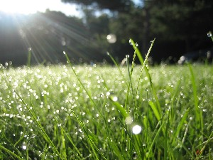 |
ŋuːn ङूऽन N सं. dew; ओस. SD: natural environment, प्राकृतिक वातावरण.
ɲiyɛʈɛŋ ञीयैटैङ N सं. sun; sunlight; सूर्य; धूप. SD: natural environment, प्राकृतिक वातावरण.
ɲyotottɑrɑ ञ्योतोत्तारा MORPH: ɲyo-tot-tɑrɑ. DEIXIS डीक्सीस. slope from the house; ढलान (घर से). SD: natural environment, प्राकृतिक वातावरण.
ot-pʰolo ओत्फोलो N सं. shore; तट. ʈʰ-ot pʰolo ठोत फोलो. my shore. मेरा तट. SD: natural environment, प्राकृतिक वातावरण.
oʈʈo ओट्टो N सं. smell (neutral); गंध (हल्की). SD: natural environment, प्राकृतिक वातावरण.
ɔo औओ N सं. sky; आकाश. SD: natural environment, प्राकृतिक वातावरण.
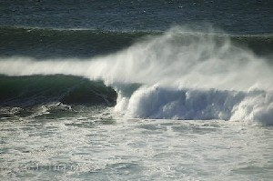 |
 pʰɑl फाल VAR: pʰɑːl फाऽल; pʰɑβ फाब. N सं. big sea wave; विशाल समुद्री लहर. SD: natural environment, प्राकृतिक वातावरण.
pʰɑl फाल VAR: pʰɑːl फाऽल; pʰɑβ फाब. N सं. big sea wave; विशाल समुद्री लहर. SD: natural environment, प्राकृतिक वातावरण.
pɑlɑ पाला N सं. stream; लहर. SD: natural environment, प्राकृतिक वातावरण.
 |
pʰɑlɖuo फाल्डूओ MORPH: pʰɑl-ɖuo. VAR: pʰɑl-duo फाल-दूओ; pʰɑlʷɖuo फालव्डूओ; pʰɑːl-ɖuo फाऽल डूओ. N सं. high tide; huge wave; ज्वार; विशाल लहर. SD: natural environment, प्राकृतिक वातावरण. NT: This is called ‘halpha’ in the local language. अण्डमानी हिन्दी में इसे ‘हल्फ़ा’ कहते हैं।.
pʰɑltɑmur फालतामूर MORPH: pʰɑl-tɑmur. N सं. foam or bubbles, of waves; लहरों का झाग या बुलबुले. SD: natural environment, प्राकृतिक वातावरण.
 pʰɑrɑŋɔ1 फाराङौ N सं. firewood tree; ईंधन के काम में आने वाला पेड़. SD: natural environment, प्राकृतिक वातावरण. SEE: pʰɑrɑŋɔ2 ‘fish’ ‘मछली फाराङौhm:{2}’.
pʰɑrɑŋɔ1 फाराङौ N सं. firewood tree; ईंधन के काम में आने वाला पेड़. SD: natural environment, प्राकृतिक वातावरण. SEE: pʰɑrɑŋɔ2 ‘fish’ ‘मछली फाराङौhm:{2}’.
pʰɑro फारो N सं. colour; रंग. SD: natural environment, प्राकृतिक वातावरण.
pebeŋɑrɑ पेबेङारा MORPH: pebeŋ-ɑrɑ. N सं. canal; नाला. SD: natural environment, प्राकृतिक वातावरण.
pirtɑːrɛycopobɑːlɔŋ पीरताऽरैयचोपोबालौङ MORPH: pirtɑːrɛycop-obɑːlɔŋ. N सं. rainbow; इंद्रधनुष. SD: natural environment, प्राकृतिक वातावरण.
 pʰocoŋɔlo फोचोङऔलो MORPH: pʰo-coŋɔlo. N सं. sunshine, very intense; चिलमिलाती हुई कड़ी धूप. SD: natural environment, प्राकृतिक वातावरण. NT: Such sunshine is supposed to be so intense that the water starts boiling. इस कड़ी धूप में पानी भी उबलने लगता है।.
pʰocoŋɔlo फोचोङऔलो MORPH: pʰo-coŋɔlo. N सं. sunshine, very intense; चिलमिलाती हुई कड़ी धूप. SD: natural environment, प्राकृतिक वातावरण. NT: Such sunshine is supposed to be so intense that the water starts boiling. इस कड़ी धूप में पानी भी उबलने लगता है।.
pʰocoʈɔe फोचोटौए MORPH: pʰoco-ʈɔe. N सं. place name; islet in front of Strait Island; एक जगह का नाम; सामने वाली ठीकरी. SD: proper noun, व्यक्तिवाचक संज्ञा, natural environment, प्राकृतिक वातावरण.
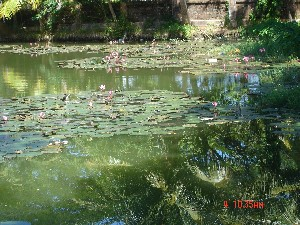 |
 pʰole फोले VAR: pole पोले. N सं. lake; झील. SD: natural environment, प्राकृतिक वातावरण.
pʰole फोले VAR: pole पोले. N सं. lake; झील. SD: natural environment, प्राकृतिक वातावरण.
pʰolelinopʰɛʈ फोलेलीनोफैट MORPH: pʰole-l-ino-pʰɛʈ. N सं. logged water; इकट्ठा हुआ पानी. SD: natural environment, प्राकृतिक वातावरण.
pʰoŋ1 फोङ VAR: fon फोन; foːn फोऽन; pʰon फोन; foŋ फोङ. N सं. cave; गुफा. SD: natural environment, प्राकृतिक वातावरण. SEE: pʰoŋ2 ‘crab’ ‘केकड़ा फोङhm:{2}’; pʰoŋ3 ‘mouth; hole’ ‘मुंह; गड्ढा फोङhm:{3}’.
pormumyo पोरमूम्यो MORPH: pormu-myo. N सं. rock, big; बड़ी चट्टान. SD: natural environment, प्राकृतिक वातावरण.
reɲɑ रेञा VAR: reːɲɑ रेऽञा. N सं. things; वस्तुएं. SD: natural environment, प्राकृतिक वातावरण.
rɔt रौत Etym: Bo; बो. N सं. water; पानी. SD: natural environment, प्राकृतिक वातावरण.
rɔtɑrɑluk रौतारालूक MORPH: rɔ-tɑrɑ-luk. VAR: rowɑ-tɑrɑ-lu रोवातारालू. N सं. jetty, the edge where boats are anchored, tied; समुद्र का घाट जहां नाव बांधी जाती है. SD: natural environment, प्राकृतिक वातावरण.
šɑlɖuo शाल्डूओ MORPH: šɑl-ɖuo. N सं. rising tide; उठती लहर. SD: natural environment, प्राकृतिक वातावरण.
šɑlʈɛrkʰole शालटैरखोले MORPH: šɑl-ʈɛr-kʰole. N सं. foam, of tide; लहर के झाग. SD: natural environment, प्राकृतिक वातावरण.
sɑre1 सारे N सं. knee-deep waters; घुटनों तक पानी. SD: natural environment, प्राकृतिक वातावरण. SEE: sɑre2 ‘saline water’ ‘समुद्र का खारा पानी सारेhm:{2}’; sɑre3 ‘salt’ ‘नमक सारेhm:{3}’; sɑre4 ‘sea’ ‘समुद्र सारेhm:{4}’.
 |
 sɑre2 सारे N सं. saline water; समुद्र का खारा पानी. SD: natural environment, प्राकृतिक वातावरण. NT: Bathing in sea water to cure skin allergy. चर्म रोग के लिए समुद्री पानी में नहाना ठीक माना जाता है।. SEE: sɑre1 ‘knee-deep waters’ ‘घुटनों तक पानी सारेhm:{1}’; sɑre3 ‘salt’ ‘नमक सारेhm:{3}’; sɑre4 ‘sea’ ‘समुद्र सारेhm:{4}’.
sɑre2 सारे N सं. saline water; समुद्र का खारा पानी. SD: natural environment, प्राकृतिक वातावरण. NT: Bathing in sea water to cure skin allergy. चर्म रोग के लिए समुद्री पानी में नहाना ठीक माना जाता है।. SEE: sɑre1 ‘knee-deep waters’ ‘घुटनों तक पानी सारेhm:{1}’; sɑre3 ‘salt’ ‘नमक सारेhm:{3}’; sɑre4 ‘sea’ ‘समुद्र सारेhm:{4}’.
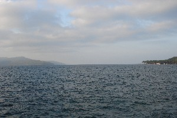 |
 sɑre4 सारे N सं. sea; समुद्र.
sɑre4 सारे N सं. sea; समुद्र.  kʰɑ me sɑre ole खा मे सारे ओले. Let’s go to watch the sea. चलो, हम समुद्र देखने चलें।. SD: natural environment, प्राकृतिक वातावरण. SEE: sɑre1 ‘knee-deep waters’ ‘घुटनों तक पानी सारेhm:{1}’; sɑre2 ‘saline water’ ‘समुद्र का खारा पानी सारेhm:{2}’; sɑre3 ‘salt’ ‘नमक सारेhm:{3}’.
kʰɑ me sɑre ole खा मे सारे ओले. Let’s go to watch the sea. चलो, हम समुद्र देखने चलें।. SD: natural environment, प्राकृतिक वातावरण. SEE: sɑre1 ‘knee-deep waters’ ‘घुटनों तक पानी सारेhm:{1}’; sɑre2 ‘saline water’ ‘समुद्र का खारा पानी सारेhm:{2}’; sɑre3 ‘salt’ ‘नमक सारेhm:{3}’.
 sɑrebekɑncɑyɑmo सारेबेकानचायामो MORPH: sɑre-bekɑn-cɑyɑmo. N सं. low tide; भाटा.
sɑrebekɑncɑyɑmo सारेबेकानचायामो MORPH: sɑre-bekɑn-cɑyɑmo. N सं. low tide; भाटा.  sɑre bekɑn cɑyɑmo kɛo bituŋ cɔŋɔm सारे बेकान चायामो कैओ बीतूङ चौङौम. Had there been a low tide, you would have had a good catch of crabs. अगर भाटा आता तो तुम्हें काफी केकड़े मिलते।. SD: natural environment, प्राकृतिक वातावरण.
sɑre bekɑn cɑyɑmo kɛo bituŋ cɔŋɔm सारे बेकान चायामो कैओ बीतूङ चौङौम. Had there been a low tide, you would have had a good catch of crabs. अगर भाटा आता तो तुम्हें काफी केकड़े मिलते।. SD: natural environment, प्राकृतिक वातावरण.
sɑrebepʰeʈ सारेबेफेट MORPH: sɑre-be-pʰeʈ. N सं. huge wave, also used for high tide; विशाल लहर, ज्वार. SD: natural environment, प्राकृतिक वातावरण, marine, समुद्री.
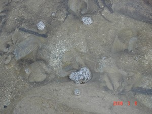 |
sɑremur सारेमूर MORPH: wɑre-mur. N सं. sea foam; समुद्र का झाग. SD: natural environment, प्राकृतिक वातावरण.
sɑrepʰɑlɖuo सारेफाल्डूओ MORPH: sɑre-pʰɑl-ɖuo. VAR: fɑːl-ɖuo फाऽल्डूओ. N सं. sea wave; समुद्र की लहर. SD: natural environment, प्राकृतिक वातावरण, marine, समुद्री.
sɑretɑcɑe सारेताचाए MORPH: sɑre-tɑcɑe. N सं. rise and ebb of the tide at half moon; पानी का चढ़ाव व उतराव, जब आधा चांद हो. SD: natural environment, प्राकृतिक वातावरण.
sɑretɑcɑi सारेताचाई MORPH: sɑre-tɑ-cɑi. N सं. calm sea; शांत पानी. SD: natural environment, प्राकृतिक वातावरण.
sɑretɑrɑcɔr सारेताराचौर MORPH: sɑre-tɑrɑ-cɔr. VAR: šɑre-tɑrɑ-cɔr शारेताराचौर. N सं. wave; flow of water; लहर; जल का बहाव. SD: natural environment, प्राकृतिक वातावरण, marine, समुद्री.
sɑretɛcɑe सारेतैचाए MORPH: sɑre-tɛcɑe. N सं. accumulated water; भरा पानी. SD: natural environment, प्राकृतिक वातावरण.
simiɑpsu सीमीआपसू Etym: Pujjukar; पुज्जूकर. N सं. islet; ठीकरी; छोटा द्वीप. SD: natural environment, प्राकृतिक वातावरण.
siro सीरो VAR: siroː सीरोऽ; ciroː चीरोऽ. N सं. sea; deep sea; सागर; समुद्र; गहरा समुद्र. SD: natural environment, प्राकृतिक वातावरण.
širo शीरो DEIXIS डीक्सीस. start of open sea/ ocean; खुले समुद्र/ महासागर की शुरुआत. SD: natural environment, प्राकृतिक वातावरण.
širolim शीरोलीम MORPH: širo-lim. N सं. peaceful sea; शांत समुद्र. SD: natural environment, प्राकृतिक वातावरण.
 široterlikʰui शीरोतेरलीखूई MORPH: širo-ter-likʰui. VAR: široterlukʰu शीरोतेरलूखू. N सं. deep sea; गहरा सागर. SD: natural environment, प्राकृतिक वातावरण.
široterlikʰui शीरोतेरलीखूई MORPH: širo-ter-likʰui. VAR: široterlukʰu शीरोतेरलूखू. N सं. deep sea; गहरा सागर. SD: natural environment, प्राकृतिक वातावरण.
 širotɛrkerɑ शिरोतैरकेरा MORPH: širo-tɛr-kerɑ. N सं. shallow sea; कम पानी वाला या उथला सागर. SD: natural environment, प्राकृतिक वातावरण.
širotɛrkerɑ शिरोतैरकेरा MORPH: širo-tɛr-kerɑ. N सं. shallow sea; कम पानी वाला या उथला सागर. SD: natural environment, प्राकृतिक वातावरण.
široʈɑrɑcerɛl शीरोटाराचेरैल MORPH: širo-ʈɑrɑ-cerɛl. N सं. open sea; green sea; खुला समुद्र; हरा सागर. SD: natural environment, प्राकृतिक वातावरण.
šuliɑ शूलीया N सं. tidal foam; ज्वार-भाटे का झाग. SD: natural environment, प्राकृतिक वातावरण.
tɑːjiyo2 ताऽजियो N सं. pool; तालाब. SD: natural environment, प्राकृतिक वातावरण. SEE: tɑːjiyo1 ‘edible’ ‘खाद्य ताऽजीयोhm:{1}’.
tɑlɑoɡ तालाओग MORPH: tɑlɑ-oɡ. Etym: Bea; बेया. N सं. a kind of white clay; एक प्रकार की सफ़ेद मिट्टी. SD: natural environment, प्राकृतिक वातावरण.
tɑlotʰire तालोथीरे MORPH: tɑlo-tʰire. VAR: tɑlutʰiri तालूथीरी. N सं. first quarter of moon; receding moon; आधा चांद; घटता चांद. SD: natural environment, प्राकृतिक वातावरण.
tɑn तान N सं. force with which water rises; पानी के चढ़ने का ज़ोर. SD: natural environment, प्राकृतिक वातावरण.
tɑŋto1 ताङतो N सं. summer; ग्रीष्म ऋतु. SD: season, मौसम, natural environment, प्राकृतिक वातावरण. SEE: tɑŋto2 ‘time period, after Bilikhu’ ‘समय, बीलीखू के बाद का ताङतोhm:{2}’.
tɑrɑ तारा N सं. surface; सतह. SD: natural environment, प्राकृतिक वातावरण.
tɑrɑcɑrɑ ताराचारा N सं. narrow drain; small creek; छोटी नाली; छोटी खाड़ी. SD: natural environment, प्राकृतिक वातावरण.
tɑrɑcɔr1 ताराचौर MORPH: tɑrɑ-cɔr. N सं. current; धारा. SD: natural environment, प्राकृतिक वातावरण. SEE: tɑrɑcɔr2 ‘spring’ ‘झरना ताराचौरhm:{2}’.
tɑrɑcɔr2 ताराचौर N सं. spring; झरना.  ɑjoe ɑtoŋ nu tɑrɑcɔre ulunciko आजोए आतोङ नू ताराचौरे ऊलून्चीको. Joe and Tong went to see the spring. जो और तोंग झरना देखने गए।. SD: natural environment, प्राकृतिक वातावरण. SEE: tɑrɑcɔr1 ‘current’ ‘धारा ताराचौरhm:{1}’.
ɑjoe ɑtoŋ nu tɑrɑcɔre ulunciko आजोए आतोङ नू ताराचौरे ऊलून्चीको. Joe and Tong went to see the spring. जो और तोंग झरना देखने गए।. SD: natural environment, प्राकृतिक वातावरण. SEE: tɑrɑcɔr1 ‘current’ ‘धारा ताराचौरhm:{1}’.
tɑrɑyɔto तारायौतो MORPH: tɑrɑy-ɔto. N सं. dusk; सांझ; गोधूलि बेला. SD: natural environment, प्राकृतिक वातावरण.
tɑːtoŋ ताऽतोङ N सं. earth; floor; ground; धरती; फ़र्श; भूमि. SD: natural environment, प्राकृतिक वातावरण.
tʰɑːycoːʈʈɔ थाऽयचोऽट्टौ N सं. inlet; crease; hole; नन्हा द्वीप; दरार; छेद. SD: natural environment, प्राकृतिक वातावरण.
tebiširo तेबीशीरो MORPH: tebi-širo. N सं. name of an island; एक द्वीप का नाम. SD: natural environment, प्राकृतिक वातावरण.
tʰel थेल N सं. wave, big; हल्फ़ा. SD: natural environment, प्राकृतिक वातावरण, marine, समुद्री.
teremit तेरेमीत N सं. incense; धूप; अगरबत्ती. teremit bɑt-ɛr-it julo तेरेमीत बात ऐर ईत जूलो. He was going to extinguish the incense. वह धूप बुझाने वाला था।. SD: natural environment, प्राकृतिक वातावरण.
tertɑŋo तेरताङो MORPH: ter-tɑŋo. N सं. beach which is behind you; पीछे का समुद्र तट. SD: natural environment, प्राकृतिक वातावरण.
 tɛrcɔlɔŋ तैरचौलौङ MORPH: tɛr-cɔlɔŋ. N सं. downward slope; ढलान. SD: natural environment, प्राकृतिक वातावरण. SEE: ʈʰercɔlɔŋ ‘steep’ ‘चढ़ाई ठेरचौलौङ ’.
tɛrcɔlɔŋ तैरचौलौङ MORPH: tɛr-cɔlɔŋ. N सं. downward slope; ढलान. SD: natural environment, प्राकृतिक वातावरण. SEE: ʈʰercɔlɔŋ ‘steep’ ‘चढ़ाई ठेरचौलौङ ’.
tʰiliu थीलीऊ VAR: i-ʈʰiliu ईठीलीऊ. N सं. clouds, dark black; काली घटा. SD: natural environment, प्राकृतिक वातावरण.
tʰomeme थोमेमे N सं. stripes; धारी. SD: natural environment, प्राकृतिक वातावरण.
tomoionel तोमोईओनेल MORPH: tomo-ionel. N सं. freshwater; ताज़ा पानी. SD: natural environment, प्राकृतिक वातावरण.
tondɑʈiyuːw तोनदाटीयूऽव N सं. half light and half shadow; धूप-छांव. SD: natural environment, प्राकृतिक वातावरण.
totkɑːtʰɑ तोतकाऽथा N सं. a small island; एक छोटा द्वीप. SD: natural environment, प्राकृतिक वातावरण.
totkɔbɔlɔ तोतकौबौलौ N सं. clearing (field); खुला मैदान. SD: natural environment, प्राकृतिक वातावरण.
totkɔwbɑːlɔ तोतकौवबाऽलौ N सं. field; खेत. SD: natural environment, प्राकृतिक वातावरण.
totpʰulol तोत्फूलोल MORPH: tot-pʰul-ol. N सं. coast; तट. ʈʰu širo tutpʰulol ʈoʈoyɑ ठू शीरो तूत्फूलोल टोटोया. I am standing at the sea coast. मैं समुद्र तट पर खड़ा हूं।. SD: natural environment, प्राकृतिक वातावरण.
tottɑːŋɔ तोत्ताऽङौ N सं. bank of a river; नदी का तट. SD: natural environment, प्राकृतिक वातावरण.
tʰɔbolo थौबोलो N सं. cool air; ठंडी हवा. SD: natural environment, प्राकृतिक वातावरण.
tʰɔubolo थौऊबोलो VAR: ʈʰɔbolo ठौबोलो. N सं. winter; rainbow; शीतकाल; इन्द्रधनुष. SD: season, मौसम, natural environment, प्राकृतिक वातावरण.
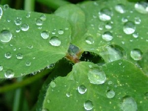 |
 tʰun थून N सं. drops; dewdrops; बूंद; ओस. SD: natural environment, प्राकृतिक वातावरण.
tʰun थून N सं. drops; dewdrops; बूंद; ओस. SD: natural environment, प्राकृतिक वातावरण.
tutɖelo तूत्डेलो MORPH: tutɖelo. VAR: tʰiʈ-ɖello थीटडेल्लो. N सं. small mound; ठीकरी. SD: natural environment, प्राकृतिक वातावरण.
ʈɑːl टाऽल N सं. gold; brass; सोना; पीतल. SD: natural environment, प्राकृतिक वातावरण.
ʈɑːlɑr टाऽलार N सं. a stone used as medicine; दवा के रूप में प्रयुक्त होने वाला पत्थर. SD: medicine, औषधी, natural environment, प्राकृतिक वातावरण.
ʈɑŋtʰo टाङठो VAR: ʈɑŋto टाङतो. N सं. summer; गर्मियां; ग्रीष्म ऋतु. SD: season, मौसम, natural environment, प्राकृतिक वातावरण.
 |
 ʈɑotɛrbec टाओतैरबेच VAR: ʈɔtɛrbec टौतैरबेच; ʈowterbeːc टोवतेरबेऽच; tɑutɛrbec ताऊतैरबेच; ʈɔterbɛc टौतेरबैच. N सं. clouds; बादल. SD: natural environment, प्राकृतिक वातावरण.
ʈɑotɛrbec टाओतैरबेच VAR: ʈɔtɛrbec टौतैरबेच; ʈowterbeːc टोवतेरबेऽच; tɑutɛrbec ताऊतैरबेच; ʈɔterbɛc टौतेरबैच. N सं. clouds; बादल. SD: natural environment, प्राकृतिक वातावरण.
ʈɑrɑy टाराय N सं. rainy season; बारिश का मौसम. SD: natural environment, प्राकृतिक वातावरण.
ʈɑucɛrel टाऊचैरेल MORPH: ʈɑu-cɛrel. VAR: ʈɔw-cerɛːl टौवचेरैऽल. N सं. sky above the cloud, lit. blue sky; बादलों के ऊपर का आसमान, शाब्दिक अर्थः नीला आसमान. SD: natural environment, प्राकृतिक वातावरण.
ʈɛŋ टैङ N सं. smell; गंध. SD: natural environment, प्राकृतिक वातावरण.
ʈɛrjuko टैरजूको MORPH: ʈɛr-juko. N सं. mouth of the jetty; घाट का मुंह. SD: natural environment, प्राकृतिक वातावरण.
 |
 ʈʰi2 ठी N सं. place; earth; land; जगह; धरती; ज़मीन. SD: habitat, रहन-सहन, natural environment, प्राकृतिक वातावरण. SEE: ʈʰi1 ‘first singular object (me)’ ‘मुझे ठीhm:{1}’.
ʈʰi2 ठी N सं. place; earth; land; जगह; धरती; ज़मीन. SD: habitat, रहन-सहन, natural environment, प्राकृतिक वातावरण. SEE: ʈʰi1 ‘first singular object (me)’ ‘मुझे ठीhm:{1}’.
 ʈʰibinjitʰom1 ठीबीनजीथोम MORPH: ʈʰi-bin-jitʰom. Etym: Khora, Bo. N सं. earthquake; भूकंप. SD: natural environment, प्राकृतिक वातावरण. SEE: ʈʰibinjitʰom2 ‘shaking’ ‘कांपना ठीबीनजीथोमhm:{2}’.
ʈʰibinjitʰom1 ठीबीनजीथोम MORPH: ʈʰi-bin-jitʰom. Etym: Khora, Bo. N सं. earthquake; भूकंप. SD: natural environment, प्राकृतिक वातावरण. SEE: ʈʰibinjitʰom2 ‘shaking’ ‘कांपना ठीबीनजीथोमhm:{2}’.
ʈʰibitpʰile ठीबीत्फीले MORPH: ʈʰibit-pʰile. N सं. tsunami; सूनामी. ʈʰibit pʰile ʈɔŋ biŋ mirse ठीबीत फीले टौङ बीङ मीरसे. All the trees got uprooted due to the tsunami. सूनामी की वजह से सारे पेड़ उखड़ गए।. SD: natural environment, प्राकृतिक वातावरण. SEE: ʈʰitpʰile ‘flood; deluge’ ‘बाढ़ आना; जलमग्न होना ठीत्फीले ’.
ʈʰiburɔɲɔ ठीबूरौञौ MORPH: ʈʰi-burɔɲɔ. VAR: ʈiːburɔːŋɔ टीऽबूरौऽङौ. N सं. tropical rocky beach; seashore; विषुवतीय पथरीला तट; समुद्री तट. SD: natural environment, प्राकृतिक वातावरण.
ʈʰicɑːe ठीचाऽए MORPH: ʈʰi-cɑːe. N सं. barren land; बंजर ज़मीन. SD: natural environment, प्राकृतिक वातावरण.
ʈiːjiːt टीऽजीऽत N सं. horizon; क्षितिज. SD: natural environment, प्राकृतिक वातावरण.
ʈʰikoɖuŋpʰubi ठीकोडूङफूबी MORPH: ʈʰi-koɖuŋ-pʰubi. N सं. place, big; बड़ी जगह. SD: natural environment, प्राकृतिक वातावरण.
ʈʰiːlɑrsiro ठीऽलारसीरो MORPH: ʈʰiːlɑr-siro. Etym: Pujjukar; पुज्जूकर. VAR: ʈiːlɑːr-siroː टीऽलाऽरसीरोऽ. N सं. island, Havelock; हैवलोक द्वीप. SD: natural environment, प्राकृतिक वातावरण.
 ʈʰimikʰu2 ठीमीखू N सं. forest; place; जंगल; क्षेत्र. ʈʰimikʰuʈɑrɑʈɔm ठीमीखूटाराटौम. big forest. बड़ा जंगल. ʈʰ-ɑrɑ-ʈʰimikʰu ठाराठीमीखू. my place. मेरा क्षेत्र. ʈʰu ʈʰimikʰu-ɑk ʈʰut-cɔne-pʰo-b-e ठू ठीमीखूआक ठूत्चौनेफोबे. I do not go to the forest. मैं जंगल में नहीं जाता हूं।.
ʈʰimikʰu2 ठीमीखू N सं. forest; place; जंगल; क्षेत्र. ʈʰimikʰuʈɑrɑʈɔm ठीमीखूटाराटौम. big forest. बड़ा जंगल. ʈʰ-ɑrɑ-ʈʰimikʰu ठाराठीमीखू. my place. मेरा क्षेत्र. ʈʰu ʈʰimikʰu-ɑk ʈʰut-cɔne-pʰo-b-e ठू ठीमीखूआक ठूत्चौनेफोबे. I do not go to the forest. मैं जंगल में नहीं जाता हूं।.  cɑobi ʈʰimikʰukɑk tɛbolo चाओबी ठीमीखूकाक तैबोलो. The dog ran away to the jungle. कुत्ता जंगल में भाग गया।. SD: natural environment, प्राकृतिक वातावरण, flora, फूल-पत्ती. SEE: ʈʰimikʰu1 ‘deity’ ‘देवता ठीमीखूhm:{1}’.
cɑobi ʈʰimikʰukɑk tɛbolo चाओबी ठीमीखूकाक तैबोलो. The dog ran away to the jungle. कुत्ता जंगल में भाग गया।. SD: natural environment, प्राकृतिक वातावरण, flora, फूल-पत्ती. SEE: ʈʰimikʰu1 ‘deity’ ‘देवता ठीमीखूhm:{1}’.
ʈʰimikʰuŋerɔ ठीमीखूङेरौ MORPH: ʈʰimikʰu-ŋerɔ. VAR: ʈʰimikʰu-ɲero ठीमीखूञेरो. N सं. forest, dense; घना जंगल. SD: natural environment, प्राकृतिक वातावरण.
ʈʰimikʰutɑrɑtɔm ठीमीखूतारातौम MORPH: ʈʰimikʰu-tɑrɑtɔm. N सं. big, old forest; विशाल, पुराना जंगल. SD: natural environment, प्राकृतिक वातावरण.
 ʈʰinjid ठीनजीद VAR: tʰinjid थीनजीद. N सं. earthquake; भूकंप. SD: natural environment, प्राकृतिक वातावरण.
ʈʰinjid ठीनजीद VAR: tʰinjid थीनजीद. N सं. earthquake; भूकंप. SD: natural environment, प्राकृतिक वातावरण.
ʈʰireʈɔlo ठीरेटौलो N सं. star, small; छोटा तारा. SD: natural environment, प्राकृतिक वातावरण.
 |
ʈʰiterɖelo ठीतेरडेलो MORPH: ʈʰi-ter-ɖelo. N सं. island; द्वीप. SD: natural environment, प्राकृतिक वातावरण.
ʈʰiterlukʰui ठीतेरलूखूई VAR: ʈiːterluxuy टिऽतेरलूखूय. N सं. deep water of river bed; abyss; नदी तल का गहरा पानी; खाई. SD: natural environment, प्राकृतिक वातावरण.
ʈʰitɛrpʰoŋ ठीतैरफोङ MORPH: ʈʰi-tɛr-pʰoŋ. N सं. pit; ditch; गड्ढा; नाली. SD: natural environment, प्राकृतिक वातावरण.
ʈʰitɛrʈɑŋo ठीतैरटाङो MORPH: ʈʰi-tɛr-ʈɑŋo. N सं. island, big; बड़ा द्वीप. SD: natural environment, प्राकृतिक वातावरण.
ʈʰitkorɑp ठीत्कोराप MORPH: ʈʰit-korɑp. N सं. land, dry; सूखी ज़मीन. SD: natural environment, प्राकृतिक वातावरण.
ʈiːtondtɑːlɛbɑːrɑ टीऽतोन्दताऽलैबाऽरा N सं. straight rock; सीधी चट्टान. SD: natural environment, प्राकृतिक वातावरण.
ʈʰitotkɑtɑ ठीतोत्काता MORPH: ʈʰi-tot-kɑtɑ. N सं. inlet, small; छोटा द्वीप. SD: natural environment, प्राकृतिक वातावरण.
ʈʰitotkɔrɔbo ठीतोतकौरौबो MORPH: ʈʰit-tot-kɔrɔbo. N सं. dry soil or land; सूखी मिट्टी या ज़मीन. SD: natural environment, प्राकृतिक वातावरण. SEE: ɑʈpʰɑi ‘wood, dry’ ‘लकड़ी, सूखी आटफाई ’; korobo ‘place, dry’ ‘जगह, सूखी कोरोबो ’.
ʈʰitɔtbetɑpʰo ठीतौत्बेताफो MORPH: ʈʰi-tɔt-be-tɑ-pʰo. DEIXIS डीक्सीस. opening in the forest with little undergrowth; जंगल में जाने का रास्ता. SD: natural environment, प्राकृतिक वातावरण.
ʈʰiʈɑrɑtɑ2 ठीटाराता MORPH: ʈʰi-ʈɑrɑ-tɑ. VAR: ʈiːtɑrɑːtɑ टीऽताराऽता. N सं. level ground; flat land; समतल मैदान; समतल ज़मीन. SD: natural environment, प्राकृतिक वातावरण. SEE: ʈʰiʈɑrɑtɑ1 ‘floor, of house’ ‘फ़र्श, घर का ठीटाराताhm:{1}’.
ʈʰiʈɑʈkɔrɔ ठीटाटकौरौ MORPH: ʈʰiʈɑʈ-kɔrɔ. N सं. dry, land; सूखी ज़मीन. SD: natural environment, प्राकृतिक वातावरण.
ʈʰiʈɔʈbeʈɑpʰo ठीटौटबेटाफो MORPH: ʈʰi-ʈɔʈ-be-ʈɑpʰo. N सं. dug up land or area; खुदी हुई ज़मीन का हिस्सा. SD: natural environment, प्राकृतिक वातावरण.
ʈoɑ टोआ N सं. layers of stones; एक के ऊपर एक रखे पत्थर. SD: natural environment, प्राकृतिक वातावरण.
 ʈol3 टोल N सं. soil; मिट्टी. SD: natural environment, प्राकृतिक वातावरण. SEE: ʈol1 ‘grey hair’ ‘सफ़ेद बाल टोलhm:{1}’; ʈol2 ‘pluck’ ‘तोड़ना टोलhm:{2}’.
ʈol3 टोल N सं. soil; मिट्टी. SD: natural environment, प्राकृतिक वातावरण. SEE: ʈol1 ‘grey hair’ ‘सफ़ेद बाल टोलhm:{1}’; ʈol2 ‘pluck’ ‘तोड़ना टोलhm:{2}’.
ʈorɔburoŋo टोरौबूरोङो MORPH: ʈorɔ-buroŋo. N सं. long sand beach; दूर तक बिछी हुई सागर किनारे की बालू. SD: natural environment, प्राकृतिक वातावरण.
ʈottɑŋo टोत्ताङो Etym: Khora. N सं. edge, of the forest; जंगल का किनारा. SD: natural environment, प्राकृतिक वातावरण.
ʈowtɑrɑːsiːmu टोवताराऽसीऽमू N सं. horizon; क्षितिज. SD: natural environment, प्राकृतिक वातावरण.
ʈoxotɑːʈowbo टोखोताऽटोवबो N सं. mortar; गारा. SD: natural environment, प्राकृतिक वातावरण.
ʈɔː3 टौऽ N सं. sky; आकाश. SD: natural environment, प्राकृतिक वातावरण. SEE: ʈɔː1 ‘bark’ ‘छाल टौऽhm:{1}’; ʈɔː2 ‘shaft’ ‘बरछा टौऽhm:{2}’.
ʈɔbec टौबेच MORPH: ʈɔ-bec. ADJ वि. overcast, lit. cloud hair; छाए हुए बादल, शाब्दिक अर्थः बादल बाल. ʈɔ-bi-erem bec-ɔm टौबीएरेम बेचौम. It is cloudy. बादल छाए हुए हैं।. SD: natural environment, प्राकृतिक वातावरण.
ʈɔerɑ टौएरा N सं. torrential rain; मूसलाधार वर्षा. SD: natural environment, प्राकृतिक वातावरण.
ʈɔlom टौलोम N सं. red clay; लाल मिट्टी. SD: natural environment, प्राकृतिक वातावरण.
 |
 ʈɔo टौओ VAR: ʈɑɔ टाऔ; ʈɔ टौ. N सं. sky; आसमान. SD: natural environment, प्राकृतिक वातावरण.
ʈɔo टौओ VAR: ʈɑɔ टाऔ; ʈɔ टौ. N सं. sky; आसमान. SD: natural environment, प्राकृतिक वातावरण.
ʈʰɔo2 ठौओ VAR: tʰou थोऊ. N सं. winter; जाड़ा. SD: natural environment, प्राकृतिक वातावरण, season, मौसम. SEE: ʈʰɔo1 ‘cold’ ‘ज़ुकाम ठौओhm:{1}’.
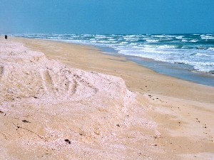 |
 ʈɔro2 टौरो VAR: ʈɔrɔ टौरौ. N सं. sand; बालू. kɔtɑto-tɔro-cɔ tut pʰɑl-be कौतातो तौरो चौ तूत फाल बे. There is a huge wave in front of the sand. बालू के सामने बहुत बड़ा हल्फ़ा है।. SD: natural environment, प्राकृतिक वातावरण, marine, समुद्री. SEE: ʈɔro1 ‘cobbler’ ‘मोची टौरोhm:{1}’; ʈɔro3 ‘turtle’ ‘कछुआ टौरोhm:{3}’.
ʈɔro2 टौरो VAR: ʈɔrɔ टौरौ. N सं. sand; बालू. kɔtɑto-tɔro-cɔ tut pʰɑl-be कौतातो तौरो चौ तूत फाल बे. There is a huge wave in front of the sand. बालू के सामने बहुत बड़ा हल्फ़ा है।. SD: natural environment, प्राकृतिक वातावरण, marine, समुद्री. SEE: ʈɔro1 ‘cobbler’ ‘मोची टौरोhm:{1}’; ʈɔro3 ‘turtle’ ‘कछुआ टौरोhm:{3}’.
ʈɔrotɑboɑ टौरोताबोआ MORPH: ʈɔro-tɑ-boɑ. N सं. seashore, sandy; बालू का समुद्री तट. SD: natural environment, प्राकृतिक वातावरण.
ʈɔroterino टौरोतेरीनो MORPH: ʈɔro-ter-ino. N सं. sand, wet; गीला बालू. SD: natural environment, प्राकृतिक वातावरण.
ʈɔrɔ टौरौ VAR: ʈorɔ टोरौ; tʰɔːro थौऽरो. N सं. sand; मिट्टी. SD: natural environment, प्राकृतिक वातावरण.
ʈɔrɔboɑ टौरौबोआ MORPH: ʈɔrɔ-boɑ. Etym: Bo; बो. N सं. sandy ground; बालू का मैदान. SD: natural environment, प्राकृतिक वातावरण.
ʈɔrɔburɔŋo टौरौबूरौङो MORPH: ʈɔrɔ-burɔŋo. N सं. beach near jetty; sandy beach; जेटी या घाट के पास का किनारा; बालू तट. SD: space, अन्तरिक्ष, natural environment, प्राकृतिक वातावरण.
 |
ʈɔrɔtoboɑ टौरौतोबोआ MORPH: ʈɔrɔ-to-boɑ. N सं. land, by the side of the sand; बालू के किनारे वाली धरती. SD: natural environment, प्राकृतिक वातावरण.
ʈɔːʈerbɑlɑtrɑ टौऽटेरबालात्रा N सं. darkness, due to clouds; बादल छा जाने से होने वाला अंधेरा. SD: natural environment, प्राकृतिक वातावरण.
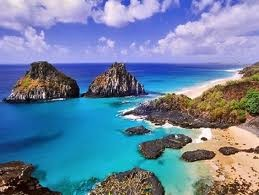 |
 ʈuɖɖilo1 टूड्डीलो N सं. island; द्वीप. SD: natural environment, प्राकृतिक वातावरण. SEE: ʈuɖɖilo2 ‘islet’ ‘छोटा टापू टूड्डीलोhm:{2}’.
ʈuɖɖilo1 टूड्डीलो N सं. island; द्वीप. SD: natural environment, प्राकृतिक वातावरण. SEE: ʈuɖɖilo2 ‘islet’ ‘छोटा टापू टूड्डीलोhm:{2}’.
 ʈuɖɖilo2 टूड्डीलो N सं. islet; छोटा टापू. SD: natural environment, प्राकृतिक वातावरण. SEE: ʈuɖɖilo1 ‘island’ ‘द्वीप टूड्डीलोhm:{1}’.
ʈuɖɖilo2 टूड्डीलो N सं. islet; छोटा टापू. SD: natural environment, प्राकृतिक वातावरण. SEE: ʈuɖɖilo1 ‘island’ ‘द्वीप टूड्डीलोhm:{1}’.
ʈukɖelo टूक्डेलो N सं. islet; छोटा टापू. SD: natural environment, प्राकृतिक वातावरण.
ʈʰutɖelo ठूत्डेलो MORPH: ʈʰut-ɖelo. N सं. island, without greenery; islet; बिना हरियाली का द्वीप; छोटा द्वीप. SD: natural environment, प्राकृतिक वातावरण.
ullui ऊल्लूई N सं. a very big wave, like a tsunami, which can turn over a ship; सूनामी जैसी बहुत बड़ी लहर जो नाव को भी उलट सकती है. SD: natural environment, प्राकृतिक वातावरण, marine, समुद्री.
 ulŋɑ ऊल्ङा N सं. wave; लहर. SD: natural environment, प्राकृतिक वातावरण, marine, समुद्री.
ulŋɑ ऊल्ङा N सं. wave; लहर. SD: natural environment, प्राकृतिक वातावरण, marine, समुद्री.
ulue2 ऊलूए VAR: ullue ऊल्लूए; uluweː ऊलूवेऽ. N सं. water spring; fountain; पानी का झरना; फव्वारा. SD: natural environment, प्राकृतिक वातावरण. SEE: ulue1 ‘eruption, of mud volcano’ ‘फूटना, ज्वालामुखी का ऊलूएhm:{1}’.
uluku ऊलूकू N सं. poison; विष. SD: natural environment, प्राकृतिक वातावरण.
utjeʈʰeb ऊत्जेठेब MORPH: ut-jeʈʰe-b. N सं. sky; आकाश. SD: natural environment, प्राकृतिक वातावरण.
 utkʰirme ऊत्खीरमे MORPH: ut-kʰirme. N सं. heat; summer; गर्मी; गर्मी का मौसम. SD: natural environment, प्राकृतिक वातावरण.
utkʰirme ऊत्खीरमे MORPH: ut-kʰirme. N सं. heat; summer; गर्मी; गर्मी का मौसम. SD: natural environment, प्राकृतिक वातावरण.